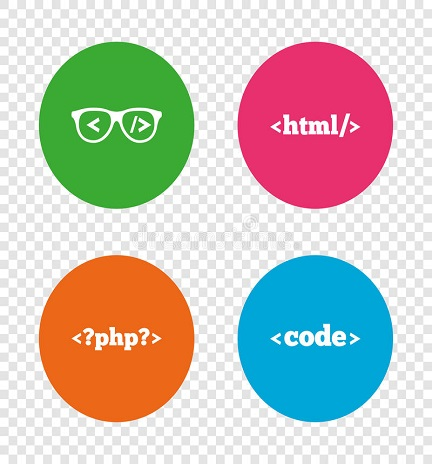
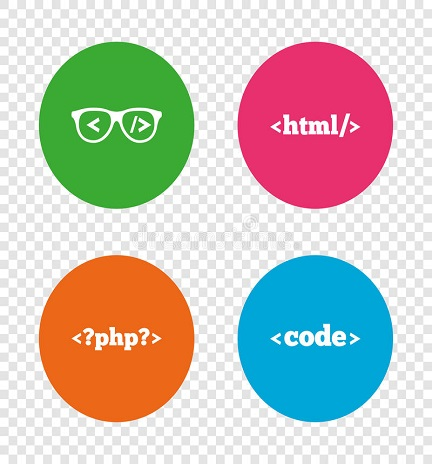

LINGUAGEM DE MARCAÇÃO
 

LINGUAGENS DE MARCAÇÃO SÃO UTILIZADAS PARA DEFINIR FORMATOS, MANEIRAS DE EXIBIÇÃO E PADRÕES DENTRO DE UM DOCUMENTO QUALQUER. NORMALMENTE, ELAS NÃO POSSUEM QUALQUER ESTRUTURA DE CONTROLE COMO AS LINGUAGENS DE PROGRAMAÇÃO TRADICIONAIS (POR EXEMPLO, COMANDOS CONDICIONAIS OU DE REPETIÇÃO). DESSA FORMA, ELAS SERVEM BASICAMENTE PARA DEFINIR COMO UM DETERMINADO CONTEÚDO SERÁ EXIBIDO NA TELA OU COMO OS DADOS ESTARÃO ESTRUTURADOS AO TRAFEGAR ENTRE OS DIFERENTES MÓDULOS DE UM SISTEMA.
AS LINGUAGENS DE MARCAÇÃO SE UTILIZAM DO CONCEITO DE MARCADOR OU TAG, QUE JÁ TRAZEM ALGUM SIGNIFICADO E QUE QUANDO FOREM VISUALIZADOS POR ALGUM SISTEMA QUE AS RECONHEÇA, IRÃO SABER COMO O CONTEÚDO DEVE SER EXIBIDO. POR EXEMPLO, SUPONHA QUE SE QUEIRA DEIXAR TODAS AS PALAVRAS COMEÇADAS PELA LETRA “A” EM NEGRITO. PARA EXECUTAR ESSA OPERAÇÃO EM HTML, SERIA NECESSÁRIO COLOCAR AS PALAVRAS COMEÇADAS POR ESTA LETRA ENTRE OS SÍMBOLOS E , SENDO QUE ESSES SÍMBOLOS SÃO UM EXEMPLO DE MARCADORES VÁLIDOS NA LINGUAGEM.
EXISTEM DIVERSOS TIPOS E PADRÕES PARA LINGUAGENS DE MARCAÇÃO E A LINGUAGEM HTML (HYPERTEXT MARKUP LANGUAGE) É APENAS MAIS UMA DELAS, MAS QUE SE POPULARIZOU POR CAUSA DO ADVENTO DA INTERNET, JÁ QUE A MAIORIA DOS DOCUMENTOS QUE TRAFEGAM NA REDE A UTILIZA PARA EXIBIR SUAS INFORMAÇÕES. OUTRO EXEMPLO DE LINGUAGEM DE MARCAÇÃO É O CHAMADO XML (EXTENSIBLE MARKUP LANGUAGE), QUE DIFERENTE DO HTML, SEU FOCO ESTÁ NA ESTRUTURAÇÃO DOS DADOS QUE SERÃO ENVIADOS ENTRE DOIS PONTOS DE UM MESMO SISTEMA E UMA MAIOR RIGIDEZ NA FORMA DE ESCRITA DA SUA ESTRUTURA.